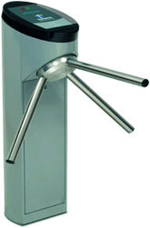
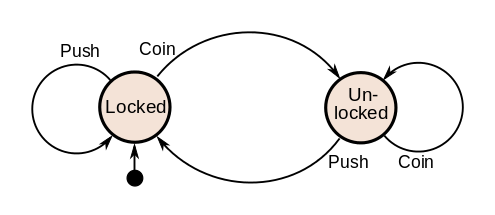

gofsm是一个简单、小巧而又特色的有限状态机（FSM）。
github已经有了很多状态机的实现，比如文末列出的一些，还为什么要再发明轮子呢？
原因在于这些状态机有一个特点，就是一个状态机维护一个对象的状态，这样一个状态机就和一个具体的图像实例关联在一起，在有些情况下，这没有什么问题，而且是很好的设计，而且比较符合状态机的定义。但是在有些情况下，当我们需要维护成千上百个对象的时候，需要创建成千上百个状态机对象，这其实是很大的浪费，因为在大部分情况下，对象本身自己会维护/保持自己当前的状态，我们只需把对象当前的状态传递给一个共用的状态机就可以了，也就是gofsm本身是“stateless”，本身它包维护一个或者多个对象的状态，所有需要的输入由调用者输入，它只负责状态的转换的逻辑，所以它的实现非常的简洁实用，这是创建gofsm的一个目的。
第二个原因它提供了Moore和Mealy两种状态机的统一接口，并且提供了UML状态机风格的Action处理，以程序员更熟悉的方式处理状态的改变。
第三个原因，当我们谈论起状态机的时候，我们总会画一个状态转换图，大家可以根据这这张图进行讨论、设计、实现和验证状态的迁移。但是对于代码来说，实现真的和你的设计是一致的吗，你怎么保证？gofsm提供了一个简单的方法，那就是它可以输出图片或者pdf文件，你可以利用输出的状态机图和你的设计进行比较，看看实现和设计是否一致。

有限状态机
有限状态机（finite-state machine）常常用于计算机程序和时序逻辑电路的设计数学模型。它被看作是一种抽象的机器，可以有有限个状态。任意时刻这个机器只有唯一的一个状态，这个状态称为当前状态。当有外部的事件或者条件被触发，它可以从一个状态转换到另一个状态，这就是转换（transition）。一个FSM就是由所有的状态、初始状态和每个转换的触发条件所定义。有时候，当这个转换发生的时候，我们可以要执行一些事情，我们称之为动作（Action）。
现实情况中，我们实际上遇到了很多的这种状态机的情况，只不过我们并没有把它们抽象出来，比如路口的红绿灯，总是在红、黄、绿的状态之间转变，比如电梯的状态，包括开、关、上、下等几个状态。
有限状态机可以有效清晰的为一大堆的问题建立模型，大量应用于电子设计、通讯协议、语言解析和其它的工程应用中，比如TCP/IP协议栈。

以一个转门为例，这种专门在一些会展、博物馆、公园的门口很常见，顾客可以投币或者刷卡刷票进入，我们下面以投币(Coin)统称这个触发事件。如果你不投币，闸门是锁着的，你推不动它的转臂，而且投一次币只能进去一个人，过去之后闸门又是锁着的，挺智能的 ：）。

如果我们抽象出来它的状态图，可以用下图表示：

它有两个状态：Locked、Unlocked。有两个输入（input）会影响它的状态，投币(coin)和推动转臂（push）。
- 在Locked状态， push没有作用。不管比push多少次闸门的状态还是lock
- 在Locked状态，投币会让闸门开锁，闸门可以让一个人通过
- 在Unlocked状态，投币不起作用，闸门还是开着
- 在Unlocked状态，如果有人push通过，人通过后闸门会由Unlocked状态转变成Locked状态。
这是一个简单的闸门的状态转换，却是一个很好的理解状态的典型例子。
以表格来表示：
| Current State | Input | Next State | Output |
|---|---|---|---|
| Locked | coin | Unlocked | Unlock turnstile so customer can push through |
| push | Locked | None | |
| Unlocked | coin | Unlocked | None |
| push | Locked | When customer has pushed through, lock turnstile |
UML也有状态图的改变，它扩展了FSM的概念，提供了层次化的嵌套状态（Hierarchically nested states）和正交区域（orthogonal regions），当然这和本文没有太多的关系，有兴趣的读者可以找UML的资料看看。但是它提供了一个很好的概念，也就是动作（Action）。就像Mealy状态机所需要的一样，动作依赖系统的状态和触发事件，而它的Entry Action和Exit Action，却又像Moore 状态机一样，不依赖输入，只依赖状态。所以UML的动作有三种，一种是事件被处理的时候，状态机会执行特定的动作，比如改变变量、执行I/O、调用方法、触发另一个事件等。而离开一个状态，可以执行Exit action，进入一个状态，则执行Entry action。记住，收到一个事件，对象的状态不会改变，比如上边闸门的例子，在Locked状态下push多少次状态都没改变，这这种情况下，不会执行Exit和Entry action。
gofsm提供了这种扩展的模型，当然如果你不想使用这种扩展，你也可以不去实现Entry和Exit。
可以提到了两种状态机，这两种状态机是这样来区分的：
- Moore machine
Moore状态机只使用entry action，输出只依赖状态，不依赖输入。 - Mealy machine
Mealy状态机只使用input action，输出依赖输入input和状态state。使用这种状态机通常可以减少状态的数量。
gofsm提供了一个通用的接口，你可以根据需要确定使用哪个状态机。从软件开发的实践上来看，有时候你并不一定要关注状态机的区分，而是清晰的抽象、设计你所关注的对象的状态、触发条件以及要执行的动作。
gofsm
gofsm参考了 elimisteve/fsm 的实现，实现了一种单一状态机处理多个对象的方法，并且提供了输出状态图的功能。
它除了定义对象的状态外，还定义了触发事件以及处理的Action，这些都是通过字符串来表示的，在使用的时候很容易的和你的对象、方法对应起来。
使用gofsm也很简单，当然第一步将库拉到本地：
|
|
我们以上面的闸门为例，看看gofsm是如何使用的。
注意下面的单个状态机可以处理并行地的处理多个闸门的状态改变，虽然例子中只生成了一个闸门对象。
首先定义一个闸门对象,它包含一个State，表示它当前的状态：
|
|
状态机的初始化简单直接：
|
|
你定义好转换对应关系transitions,一个Transition代表一个转换，从某个状态到另外一个状态，触发的事件名，要执行的Action。
因为Action是字符串，所以你需要实现delegate将Action和对应的要处理的方法对应起来。
注意from和to的状态可以一样，在这种情况下，状态没有发生改变，只是需要处理Action就可以了。
如果Action为空，也就是不需要处理事件，只是发生状态的改变而已。
处理Action的类型如下：
|
|
然后我们就可以触发一些事件看看闸门的状态机是否正常工作：
|
|
如果想将状态图输出图片，可以调用下面的方法，它实际是调用graphviz生成的，所以请确保你的机器上是否安装了这个软件，你可以执行dot -h检查一下：
|
|
生成的图片就是文首的闸门的状态机的图片。
如果你想定制graphviz的参数，你可以调用另外一个方法：
|
|
其它Go语言实现的FSM
如果你发现gofsm的功能需要改进，或者有一些想法、或者发现了bug，请不用迟疑，在issue中提交你的意见和建议，我会及时的进行反馈。
如果你觉得本项目有用，或者将来可能会使用，请star这个项目 smallnest/gofsm。
如果你想比较其它的Go语言实现的fsm，可以参考下面的列表：
- elimisteve/fsm
- looplab/fsm
- vaughan0/go-fsm
- WatchBeam/fsm
- DiscoViking/fsm
- autocube/hsm
- theckman/go-fsm
- Zumata/fsm
- syed/go-fsm
- go-rut/fsm
- yandd/fsm
- go-trellis/fsm
- ……